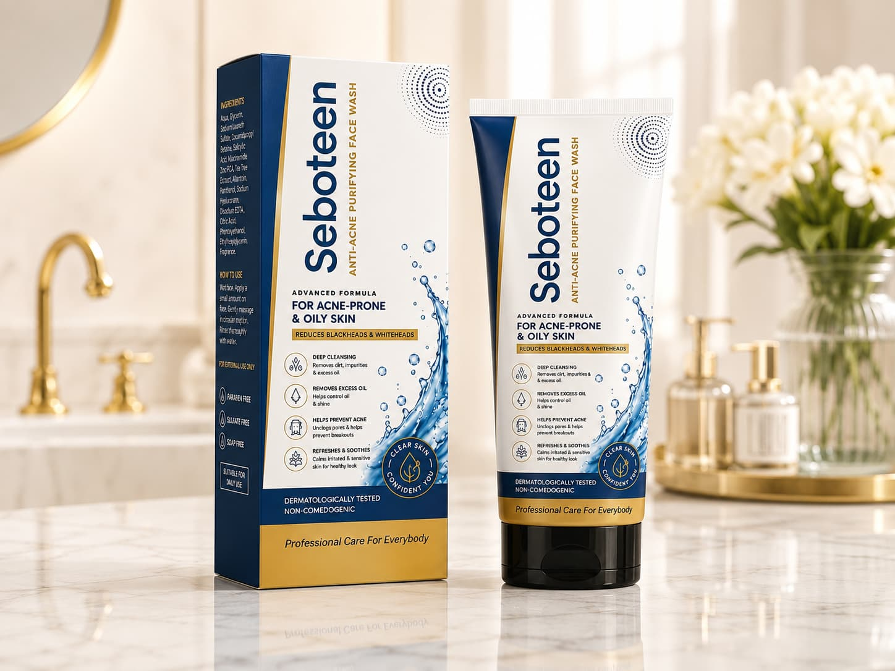

Oily Skin: Causes, Routine & Common Mistakes
Oily skin is often misunderstood — many people respond to it by over-cleansing or over-drying their skin, which usually backfires and makes oil production worse.
Why skin produces excess oil
Sebaceous glands produce oil (sebum) to protect and moisturize the skin — but factors like hormones, humidity, genetics, and even over-drying skincare routines can push these glands to overproduce. When skin is stripped of natural moisture (from harsh cleansers or skipping moisturizer), it often responds by producing even more oil to compensate — a cycle that keeps skin looking greasy and prone to clogged pores.
Why oily skin is more prone to acne
Excess oil combines with dead skin cells and can clog pores, creating the ideal environment for the bacteria that cause acne. This is why oily and acne-prone skin are so closely linked, and why treating one usually means addressing the other.
How Seboteen helps control oil
Seboteen's Acne Control Cream and Purifying Face Wash are built around salicylic acid and mandelic acid — actives that unclog pores and gently exfoliate without over-stripping the skin. The formula is designed to control oil and treat breakouts while keeping the skin barrier intact, so skin doesn't overcompensate with even more oil.
The Solution: Vash Glow Seboteen Anti-Acne Purifying Face Wash

Seboteen's Acne Control Cream and Purifying Face Wash are built around salicylic acid and mandelic acid — actives that unclog pores and gently exfoliate without over-stripping the skin. The formula controls oil and treats breakouts while keeping the skin barrier intact, so skin doesn't overcompensate with even more oil.
Seboteen Anti-Acne Purifying Face Wash
Oily skin usually needs balance rather than aggressive stripping. Gentle cleansing and appropriate actives can help keep excess oil and congestion under control.
Frequently asked questions
Should oily skin be cleansed more often?
Over-cleansing can irritate the skin. Follow a consistent routine suited to your skin and the product directions rather than repeatedly washing throughout the day.
Can I expect the same results as everyone else?
Skin and hair concerns have different causes and responses. Use products consistently as directed and seek professional advice for persistent concerns.
Where can I see the product details?
Open the product page for ingredients, usage guidance, precautions and ordering information.